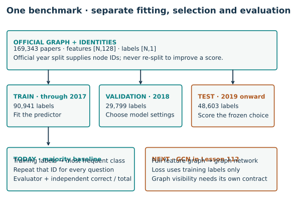

OGB setup and the benchmark contract
OGB setup · identify the experiment before reading its score
Your win: load an official graph benchmark, verify its split identities, run a training-only constant baseline, and explain what the evaluator's number means.
Lesson 110 showed that a saved predictor needs a complete state and information contract. A benchmark adds another contract: everyone must answer the same questions under the same scoring rule. This prepares the GCN reproduction in Lesson 112 and the RelBench experiments in Year 4.
Route: read and trace the example in about 20 minutes, then implement two notebook functions. Loading the full graph needs a separate data download and several hundred MB of memory; no GPU or paid training is required.
Student notebook · Executed solution · Reference card · Exact commands
1 · Retrieve the distinction before downloading¶
Write answers first: does a chronological label split prove historical feature availability? Which split selects a checkpoint? Does matching a paper's score prove that you ran its experiment?
Check your reasoning
No: later features or graph edges may still be visible. Validation chooses the checkpoint; test evaluates the frozen choice. An equal number can arise from different data, preprocessing or model settings. A reproduction claim needs the protocol as well as the score.
Read first: the official OGB node-prediction specification, then Hu et al., OGB, §3 and §4.3. Focus on the task definition, official split and evaluator. The current leaderboard and the historical paper table are separate snapshots of evidence.
2 · Five objects, five jobs¶
A benchmark fixes prediction problems and evaluation rules. A dataset supplies the graph and feature rows. A split assigns node IDs to training, validation or test. A predictor maps inputs to answers. An evaluator compares those answers with the corresponding labels.
Our selected task is ogbn-arxiv: predict a paper's subject category. The released features have 128 coordinates and the target has 40 classes. The official split uses publication year: through 2017 for training, 2018 for validation, and 2019 onward for test. These are official IDs, not a new random split. Dataset specification.
The library-agnostic loader makes the interface visible:
from ogb.nodeproppred import NodePropPredDataset, Evaluator
dataset = NodePropPredDataset(name="ogbn-arxiv", root="ogb-data")
graph, labels = dataset[0]
splits = dataset.get_idx_split()
evaluator = Evaluator(name="ogbn-arxiv")
graph['node_feat'][i] and labels[i] describe the same node i. An edge uses node indices too. A split index is not an independent row counter. Reordering features without remapping edges and labels changes the question.
TODO 1 — audit the partition. Require integer, in-range, nonduplicated IDs. Check that the three splits have no overlap and together cover this dataset's nodes. The notebook supplies deliberate overlap, duplicate and out-of-range cases. Merely checking split sizes would miss a swapped or repeated ID. Full membership hashes are recorded in the author report.
3 · Information access is not the same as label access¶


Read the diagram: follow the three label branches separately. Training labels fit the predictor; validation labels guide choices; test labels judge the frozen result. The feature graph has its own visibility policy.
The published GCN baseline is transductive: it propagates on the released feature graph, then restricts its training objective to training labels. Transductive means that held-out feature rows and structure can participate without using their labels for fitting. A year-based label split therefore does not by itself certify a historically available feature graph. The exact GCN implementation is studied next; see the pinned released training code.
Our simple baseline ignores features and edges entirely. It predicts the most frequent training class for every node. This is a useful plumbing check: it exposes label alignment and scoring mistakes before neural training. It is not a competitive graph model.
Worked example. Training labels [2,1,2,0] choose class 2. For held-out labels [2,0,2,1], predictions [2,2,2,2] get two of four correct: accuracy 0.5. Changing those held-out labels may change the measured score, but must not change the chosen class.
TODO 2 — fit without held-out labels. Implement majority_predictions. Count only labels[train_idx]. Return shape [N,1]; break a frequency tie by the smallest class ID. A test changes every held-out label and demands unchanged predictions.
4 · Score aligned answers using the official evaluator¶
idx = splits['valid']
score = evaluator.eval({
"y_true": labels[idx],
"y_pred": predictions[idx],
})["acc"]
For this task, the evaluator expects class IDs in [number of evaluated nodes, 1], not a matrix of probabilities. A neural network's class logits would first use argmax(axis=1, keepdims=True). Both labels and predictions must use the same split indices and ordering.
Accuracy is correct predictions divided by evaluated nodes. Independently compute that fraction and compare it to the official result. Agreement checks the arithmetic; the split audit checks which questions were scored.
| Split | Official nodes | Majority accuracy |
|---|---|---|
| train | 90,941 | 17.9061% |
| valid | 29,799 | 7.6278% |
| test | 48,603 | 5.8618% |
Chosen training class: 28. Full identity and score report.
Evidence boundary. These are fresh full-data scores for a course majority baseline. There is no optimization, random seed study or validation tuning. The published GCN experiment is not reproduced in this lesson. Lesson 112 provides that separate named reproduction. Running this package does not establish learner mastery.
The notebook authenticates the raw archive and uses the official loader on a fresh temporary extraction. This avoids depending on an old processed pickle cache whose loading behavior varies with PyTorch versions. The original archive is reusable; the notebook does not alter another lesson's processed cache.
5 · Read a leaderboard as a protocol, not a ranking alone¶
Before comparing two rows, record: dataset and release, split IDs, feature and edge transformations, model, training schedule, validation selection, metric, run count and uncertainty. A higher test score is not a reproduction failure repair if the change was chosen after looking at test results.
Worked selection. Validation accuracies [0.60,0.70,0.70] select the second epoch under a first-maximum rule. Test scores [0.80,0.65,0.90] do not change that choice. Reporting 0.90 would select a different predictor using test labels.
Transfer check: what must be frozen for a fair comparison?
Keep the dataset identities, evaluated questions, information policy and scoring rule fixed. Record any architecture, preprocessing, compute or selection differences. Equal epoch counts alone do not establish equal tuning effort.
EXIT · deliver a benchmark contract¶
Submit both functions, the full-data report and a short explanation of four points: what each split does; why held-out labels cannot fit your baseline; why the GCN's graph visibility differs from your constant predictor; and what evidence a historical reproduction claim would still require.
Tomorrow, reconstruct the five objects without notes. In a week, apply the same checklist to a relational task. Ask the teaching agent about any unclear index, score or evidence boundary. Learner status remains PENDING_WRITTEN_DEFENSE.
Carry this forward: Lesson 112 keeps these official questions and replaces the constant with a complete GCN, validation-selected state and ten fresh fits.